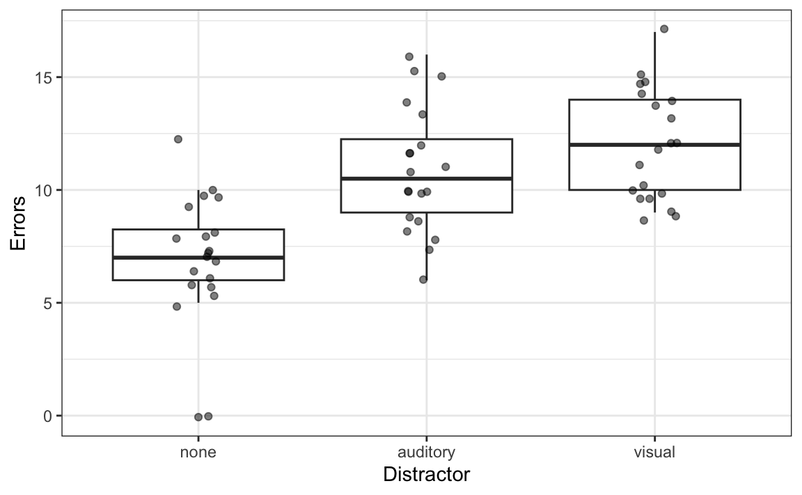
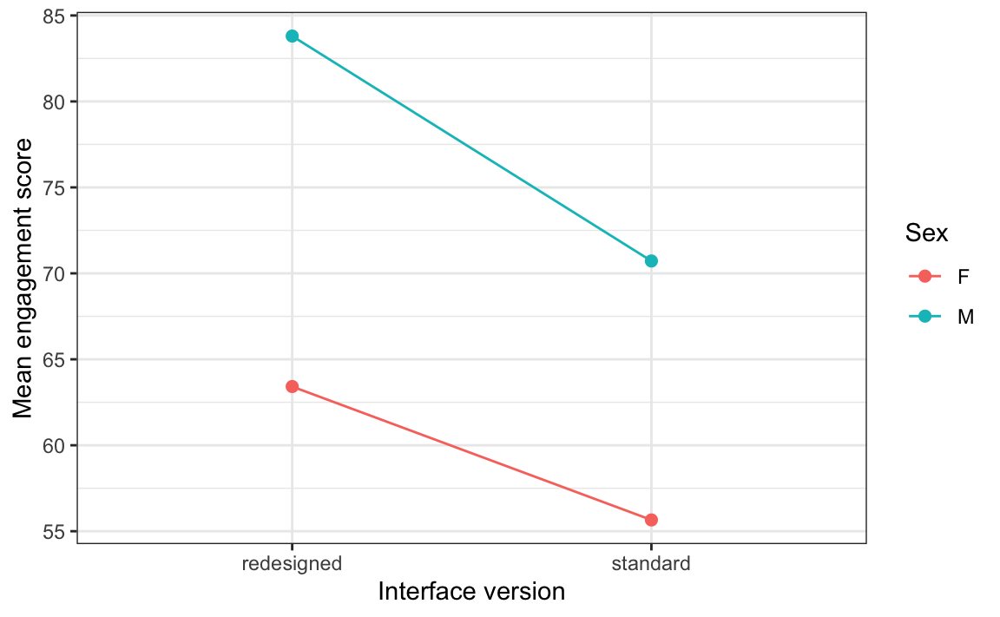

library(tidyverse)
library(behdslabs)
library(afex)25 Comparing More Than Two Groups: ANOVA
Draft
This chapter is a draft, written with an AI assistant (Claude) on 29 October 2026, and not yet reviewed by the instructor. It may be substantially rewritten or removed.
The t-test (Chapter 24) compares two groups. Many experiments have more: three distractor conditions, four levels of task difficulty, or two factors crossed with each other, such as interface version and sex. We could run a t-test for every pair of groups, but with three groups that is already three tests, and the more tests we run, the more likely it is that at least one gives a small p-value by chance (Chapter 26). The analysis of variance (ANOVA) answers a first, global question with a single test: are there any differences among the group means?
This chapter is a practical refresher: how to run and read an ANOVA in R, without the formulas behind it. We use the afex package, which is widely used in psychology and handles between-subjects, within-subjects (repeated measures) and mixed designs with the same function, aov_ez(). Install it once with install.packages("afex").
This chapter is original material written for this book; it is not part of Irizarry’s Introduction to Data Science. You may also meet the older ez package and its function ezANOVA(), which works in a very similar way; ez is still on CRAN but no longer developed, so we use afex.
25.1 One factor, between subjects
Suppose we test 60 participants on an attention task. Each participant is assigned to one of three conditions: no distractor, an auditory distractor, or a visual distractor. We record the number of errors each participant makes. The data are simulated:
set.seed(2026)
n <- 20
attention <- tibble(
id = factor(sprintf("P%02d", 1:(3 * n))),
condition = factor(rep(c("none", "auditory", "visual"), each = n),
levels = c("none", "auditory", "visual")),
errors = round(pmax(0, rnorm(3 * n, mean = rep(c(8, 10, 13), each = n), sd = 3)))
)
head(attention)
#> # A tibble: 6 × 3
#> id condition errors
#> <fct> <fct> <dbl>
#> 1 P01 none 10
#> 2 P02 none 5
#> 3 P03 none 8
#> 4 P04 none 8
#> 5 P05 none 6
#> # ℹ 1 more rowAs always, we look at the data first:
attention |>
ggplot(aes(condition, errors)) +
geom_boxplot(outlier.shape = NA) +
geom_jitter(width = 0.1, alpha = 0.5) +
labs(x = "Distractor", y = "Errors")
attention |>
group_by(condition) |>
summarize(n = n(), mean = mean(errors), sd = sd(errors))
#> # A tibble: 3 × 4
#> condition n mean sd
#> <fct> <int> <dbl> <dbl>
#> 1 none 20 6.85 2.98
#> 2 auditory 20 10.9 2.75
#> 3 visual 20 12.0 2.44
Participants seem to make more errors with a distractor. The ANOVA asks whether differences among the three means this large could easily arise by chance if the conditions had no effect. The idea behind it, without the formulas: the test compares how much the group means differ from each other with how much participants differ within each group. If the means differ much more than we would expect from the variation within groups, the test gives a large F value and a small p-value.
aov_ez() needs the data in long format, with one row per observation, and three pieces of information: the column that identifies participants (id), the outcome (dv, the dependent variable), and the factor (between, because each participant is in only one condition):
fit1 <- aov_ez(id = "id", dv = "errors", data = attention, between = "condition")
#> Contrasts set to contr.sum for the following variables: condition
fit1
#> Anova Table (Type 3 tests)
#>
#> Response: errors
#> Effect df MSE F ges p.value
#> 1 condition 2, 57 7.46 20.00 *** .412 <.001
#> ---
#> Signif. codes: 0 '***' 0.001 '**' 0.01 '*' 0.05 '+' 0.1 ' ' 1afex first tells us that it set “sum contrasts” for the factor. This is a technical setting that makes the results of designs with more than one factor easier to interpret; you can ignore the message. The table has one row per effect:
df: the degrees of freedom, here 2 (three groups minus one) and 57 (participants minus groups). They are reported with the F value, as in F(2, 57) = 20.F: the test statistic. Values near 1 are what we expect with no effect.ges: the generalized eta squared, an effect size. It is the share of the variation in the outcome that is related to the factor; here about 41%.p.value: the probability of an F value at least this large if the three population means were equal.
The p-value is very small, so we conclude that the number of errors differs among the conditions. But the ANOVA only tells us that there is a difference somewhere; it does not tell us which conditions differ from which.
25.2 Post-hoc comparisons
To find out which groups differ, we compare all pairs of conditions after the ANOVA (post hoc, “after this”). With three groups there are three pairs, so we must correct the p-values for multiple comparisons. The base R function pairwise.t.test() does both:
pairwise.t.test(attention$errors, attention$condition, p.adjust.method = "holm")
#>
#> Pairwise comparisons using t tests with pooled SD
#>
#> data: attention$errors and attention$condition
#>
#> none auditory
#> auditory 4e-05 -
#> visual 4e-07 0.2
#>
#> P value adjustment method: holmEach cell is the corrected p-value for one pair. Both distractor conditions differ clearly from the no-distractor condition, while the auditory and visual conditions do not differ reliably from each other.
Here we used Holm’s correction, the default of pairwise.t.test(). Several corrections exist: Bonferroni, Holm, the false discovery rate (FDR) correction of Benjamini and Hochberg, and that of Benjamini and Yekutieli are the most common, and you choose them with the p.adjust.method argument. They differ in what they protect against and in how much power they leave you; Chapter 26 explains when to use each. For more flexible comparisons after an afex model, the next step is the emmeans package (see its vignette Comparisons and contrasts).
Planned contrasts
If, before collecting the data, you had a specific hypothesis, for example “any distractor increases errors compared with no distractor”, you do not need to test every pair. Testing only the comparisons you planned (planned contrasts), ideally written down in a preregistration, means fewer tests and more power. See the open sources listed in Chapter 26.
25.3 Two factors, between subjects
With two factors, an ANOVA tells us about each factor and about their interaction: whether the effect of one factor depends on the level of the other. We use the app_engagement_experiment dataset, in which each of 780 users tried either the standard or a redesigned interface of an app, and we look at the engagement score by interface version and sex. Each row is a different user, so we create an id column from the row number:
app <- app_engagement_experiment |>
mutate(id = factor(row_number()),
ui_version = fct_relevel(ui_version, "standard"))The best way to understand an interaction is an interaction plot of the cell means:
app |>
group_by(ui_version, sex) |>
summarize(mean = mean(engagement_score), .groups = "drop") |>
ggplot(aes(ui_version, mean, color = sex, group = sex)) +
geom_point(size = 2) +
geom_line() +
labs(x = "Interface version", y = "Mean engagement score", color = "Sex")
The redesigned interface has higher engagement for both groups, and men have higher engagement with both versions. The lines are not parallel, though: the gain from the redesign is larger for men. Non-parallel lines are what an interaction looks like. Now the ANOVA, with both factors in between:
fit2 <- aov_ez(id = "id", dv = "engagement_score", data = app,
between = c("ui_version", "sex"))
#> Contrasts set to contr.sum for the following variables: ui_version, sex
fit2
#> Anova Table (Type 3 tests)
#>
#> Response: engagement_score
#> Effect df MSE F ges p.value
#> 1 ui_version 1, 776 154.76 136.77 *** .150 <.001
#> 2 sex 1, 776 154.76 395.62 *** .338 <.001
#> 3 ui_version:sex 1, 776 154.76 8.92 ** .011 .003
#> ---
#> Signif. codes: 0 '***' 0.001 '**' 0.01 '*' 0.05 '+' 0.1 ' ' 1There are three tests: the main effect of interface version (averaging over sex), the main effect of sex (averaging over version), and the interaction ui_version:sex. All three are significant: the redesign increases engagement, men engage more, and the size of the redesign effect differs between men and women. When the interaction is significant, the main effects must be read with care: “the redesign works” is true here for both groups, but by different amounts. afex reports Type 3 tests by default, the convention in psychology for designs with more than one factor.
The ANOVA table is itself a set of tests
A two-factor ANOVA gives three p-values; a three-factor ANOVA gives seven (three main effects, three two-way interactions, one three-way interaction). If you have no specific hypothesis for each of these effects, and you just look at which ones come out significant, you are running several tests, and the same multiple-comparison problem as with post-hoc tests applies. Cramer and colleagues1 showed that this hidden multiplicity is common in psychology papers, and recommended correcting the p-values of the ANOVA table too, not only those of the post-hoc tests. For example, with Holm’s correction:
p.adjust(fit2$anova_table[["Pr(>F)"]], method = "holm")
#> [1] 6.50e-29 5.57e-71 2.91e-03Here all three effects remain significant. If, instead, you predicted one specific effect in advance, that test is not part of an exploratory family and does not need this correction.
25.4 One factor, within subjects (repeated measures)
In many experiments, each participant is tested in all conditions. Extending the Stroop example of Chapter 24, suppose each of 20 participants responds to congruent trials (the word red printed in red), neutral trials (a row of Xs printed in red) and incongruent trials (the word red printed in green). We record each participant’s average reaction time per condition. The data are simulated: each participant has their own overall speed, and the conditions add different amounts of time.
set.seed(10)
n_part <- 20
speed <- rnorm(n_part, 500, 80)
stroop3 <- tibble(
participant = factor(rep(sprintf("P%02d", 1:n_part), times = 3)),
condition = factor(rep(c("congruent", "neutral", "incongruent"), each = n_part),
levels = c("congruent", "neutral", "incongruent")),
rt = round(rep(speed, 3) + rep(c(0, 10, 45), each = n_part) + rnorm(3 * n_part, 0, 25))
)
head(stroop3)
#> # A tibble: 6 × 3
#> participant condition rt
#> <fct> <fct> <dbl>
#> 1 P01 congruent 487
#> 2 P02 congruent 431
#> 3 P03 congruent 373
#> 4 P04 congruent 399
#> 5 P05 congruent 492
#> # ℹ 1 more rowThe data are in long format: three rows per participant, one per condition. The only change in aov_ez() is that the factor goes in within, because it varies within each participant:
fit3 <- aov_ez(id = "participant", dv = "rt", data = stroop3, within = "condition")
fit3
#> Anova Table (Type 3 tests)
#>
#> Response: rt
#> Effect df MSE F ges p.value
#> 1 condition 1.78, 33.80 625.69 30.89 *** .113 <.001
#> ---
#> Signif. codes: 0 '***' 0.001 '**' 0.01 '*' 0.05 '+' 0.1 ' ' 1
#>
#> Sphericity correction method: GGThe degrees of freedom are not whole numbers. A repeated-measures ANOVA assumes sphericity: roughly, that the differences between each pair of conditions vary by similar amounts across participants. Because this assumption often fails, afex applies the Greenhouse–Geisser correction by default, which reduces the degrees of freedom and makes the test a little more cautious. You only need to report the corrected values.
For post-hoc comparisons, we use paired t-tests, because the same participants are in every condition. pairwise.t.test() pairs the observations by their order, so the data must be sorted in the same participant order within each condition, as they are here:
pairwise.t.test(stroop3$rt, stroop3$condition, paired = TRUE,
p.adjust.method = "holm")
#>
#> Pairwise comparisons using paired t tests
#>
#> data: stroop3$rt and stroop3$condition
#>
#> congruent neutral
#> neutral 1e-04 -
#> incongruent 4e-06 0.002
#>
#> P value adjustment method: holmAll three conditions differ from each other. Repeated-measures ANOVA works on one value per participant and condition, usually an average over many trials. When you want to analyse the single trials, or when some participants miss some conditions, the modern tool is a mixed model, which we meet later in the course.
25.5 When the data are not normal: the Kruskal–Wallis test
Like the t-test, the ANOVA compares means and assumes that the outcome is roughly normal within each group. When the data are clearly skewed, contain outliers, or are ordinal, the Kruskal–Wallis test is the rank-based alternative, just as the Wilcoxon test is for two groups (Chapter 24):
kruskal.test(errors ~ condition, data = attention)
#>
#> Kruskal-Wallis rank sum test
#>
#> data: errors by condition
#> Kruskal-Wallis chi-squared = 25, df = 2, p-value = 3e-06It ranks all observations and asks whether the ranks differ among the groups. For within-subjects designs, the rank-based counterpart is the Friedman test, friedman.test().
25.6 Which ANOVA?
| Design | Example | In aov_ez() |
|---|---|---|
| Each participant in one condition (between subjects) | distractor type, interface version | between = "factor" |
| Each participant in all conditions (within subjects) | Stroop congruent / neutral / incongruent | within = "factor" |
| Some factors between, some within (mixed design) | group (patients, controls) × condition | between = "group", within = "condition" |
25.7 Further reading
- D. Navarro, Learning Statistics with R, Chapter 14, Comparing several means (one-way ANOVA), which explains how the F test works, and Chapter 16, Factorial ANOVA.
- R. A. Poldrack, Statistical Thinking for the 21st Century, Comparing means, including ANOVA as a linear model.
- The
afexvignette ANOVA and post-hoc contrasts: reanalysis of Singmann and Klauer (2011), a complete worked example withaov_ez()andemmeans.
25.8 Exercises
1. In app_engagement_experiment, users belong to one of five cohorts (cohort). Run a one-way between-subjects ANOVA of engagement_score by cohort with aov_ez() (create an id column first). Report the result as F(df1, df2) = …, p = …, and say in one sentence what it means.
2. Run the post-hoc comparisons for exercise 1 with pairwise.t.test(), first with p.adjust.method = "holm" and then with "bonferroni". How many pairs are there? Do the two corrections lead to the same conclusions?
3. Make a boxplot of error_rate_pct by cohort. Is the variable skewed? Compare the result of a one-way ANOVA with that of kruskal.test().
A. O. J. Cramer, D. van Ravenzwaaij, D. Matzke, H. Steingroever, R. Wetzels, R. P. P. P. Grasman, L. J. Waldorp, and E.-J. Wagenmakers (2016), Hidden multiplicity in exploratory multiway ANOVA: Prevalence and remedies, Psychonomic Bulletin & Review, 23, 640–647, https://doi.org/10.3758/s13423-015-0913-5 (open access).↩︎